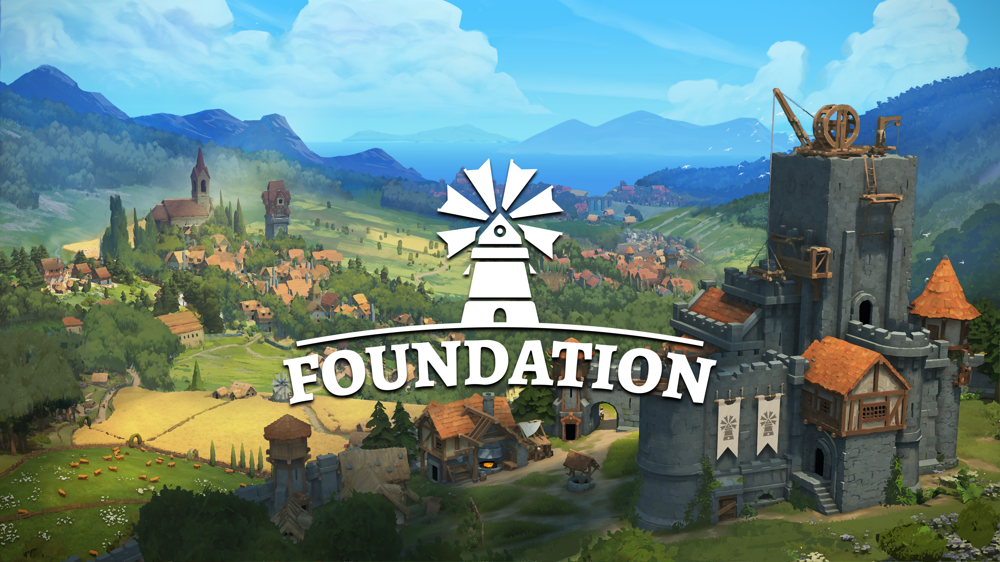
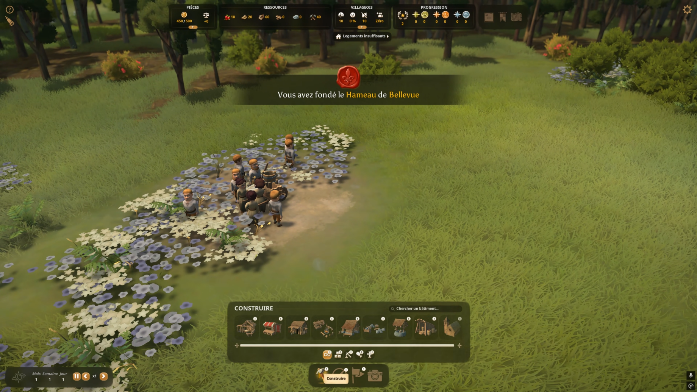

📜 Guide Foundation — Village de Bellevue
🎮 Foundation
Genre : City-builder médiéval
Développeur : Polymorph Games
Sortie : 2019 (Early Access)
Version 1.0 : 31 janv. 2025

🎯 Objectif
L’objectif de cette partie est de construire une cité médiévale à la fois belle et fonctionnelle sur la carte Fleuve. L’approche mélange optimisation des ressources et construction organique.
🏁 Fondation du village
La partie commence avec 10 villageois dans une zone de départ dégagée. Le centre du village est posé en premier, accompagné du dépôt de ressources. C’est à ce moment que le village de Bellevue est officiellement fondé.

🏗️ Développement initial
Un atelier de bâtisseur est installé avec trois serfs pour gérer les premiers chantiers. Un camp de bûcherons est ensuite placé près de la forêt, loin des futures zones résidentielles afin d’éviter les nuisances.
🌲 Bois & logistique
Trois bûcherons sont recrutés, avec une limite de stockage de bois fixée à 50 unités. Pour éviter la déforestation, un camp de sylviculteurs est mis en place afin d’assurer le reboisement constant.

👥 Population
Les premiers immigrants arrivent dans le village. Ils doivent être acceptés manuellement sous peine de repartir. Le bonheur général influence directement le flux d’immigration.
🏘️ Besoins des villageois
Pour maintenir une population stable, il faut répondre à quatre besoins essentiels : eau, nourriture, services et logements. Un premier quartier résidentiel est construit le long de la rivière.
🪵 Production
Une carrière et une hutte de récolte sont mises en place pour assurer pierre et nourriture. Grâce à la pierre, un puits est construit pour fournir de l’eau au village.
📈 Progression
Le village atteint un niveau permettant de débloquer un second territoire gratuit. Un marché rural est construit avec étals et tente, augmentant la splendeur et la capacité de stockage.
📦 Commerce
Une scierie permet de transformer le bois en planches. Avec 20 planches produites, la route commerciale de Northbury est débloquée, permettant ventes et achats de ressources.
⚙️ Optimisation
Le village s’étend avec des améliorations de bâtiments, un stockage renforcé et le développement de la pêche. Le marché est complété par un second étal.
🏁 Conclusion
Le commerce devient rentable avec la vente de 18 planches. Le village de Bellevue atteint une stabilité économique et sociale.